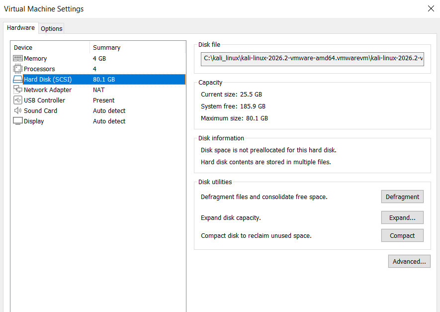
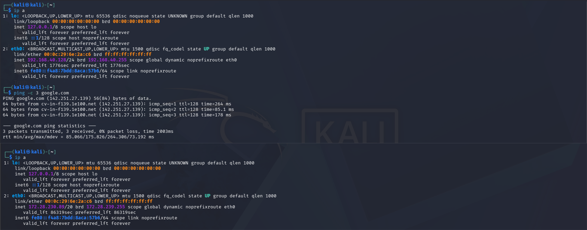

Client-side virtualization is one of the most under-appreciated skills in modern IT operations. It's easy to click "create VM" in a hypervisor GUI and call it done — but understanding what actually happens underneath is what separates a technician who can deploy a VM from an engineer who can diagnose why it performs badly, why it can't reach the internet, or why a security tool inside it behaves unexpectedly.
This engagement audits a Type-2 hypervisor environment from the ground up: how virtual hardware is mapped from physical host resources, how the guest operating system is isolated from the host, and how different virtual networking modes determine what the guest can see and who can see it. The work spans hardware allocation theory, two distinct networking profiles, and the CompTIA Cloud concepts that virtual infrastructure is built on.
The hypervisor was deployed on a personal Windows laptop with the guest running as an isolated sandbox. No production infrastructure was involved. Networking analysis was performed on a standard home LAN, and no third-party traffic was captured or inspected.
Hypervisor Architecture & Hardware Resource Mapping
The environment begins with a Type-2 hypervisor — VMware Workstation running as a normal application on top of a Windows host OS. This is the fundamental architectural distinction from Type-1 (bare-metal) hypervisors like ESXi, Proxmox, or Hyper-V Server, which install directly on the physical hardware with no host OS underneath. A Type-2 hypervisor's guest virtual machines do not access the CPU, memory, or disk directly — every operation is mediated by the host OS and the hypervisor layer, at a small but measurable cost.
That mediation cost is why Type-1 hypervisors dominate enterprise data centres: on a workload running 200 VMs, a few percent of hypervisor overhead per VM becomes a significant capacity loss. For a single user running one or two VMs on a laptop, the trade-off is irrelevant — the flexibility of Type-2 vastly outweighs the overhead.
Physical-to-virtual resource allocation
Each guest VM is provisioned with a slice of the host's physical resources, presented to the guest as its own dedicated hardware. For the Kali Linux VM in this engagement, the allocation was deliberately balanced to leave the host fully usable while still giving the guest enough capacity to run security tooling:
- CPU — 2 sockets × 2 cores = 4 vCPUs total. The host's physical cores are time-shared between the host OS and the guest. VMware's scheduler is responsible for arbitrating access, which means the guest sees four continuous processors even though they are not four dedicated physical cores.
- Memory — 4 GB vRAM. Allocated as a contiguous reservation from the host's physical memory pool. 4 GB is a modest allocation by modern standards but appropriate for a CLI-focused security lab — well above Kali's 1 GB minimum, well below the point where the host would begin paging.
- Storage — 80.1 GB thin-provisioned disk. Thin provisioning means the disk file initially occupies only the blocks that have actually been written — roughly 25.5 GB out of the 80.1 GB maximum. The disk file will grow as data is written, but never exceeds the configured maximum. This is exactly the mechanism that cloud IaaS providers use to oversubscribe storage across thousands of tenants.

This resource-provisioning model — manually selecting vCPU count, memory size, and storage capacity from a raw pool — is exactly the workflow of Infrastructure as a Service at cloud scale. The interface is different (a web console instead of a desktop application), but the underlying operation is identical: a customer declares the resources they need, and a virtualization layer carves those resources out of a shared physical pool.
Dual-Mode Virtual Networking Integration
The most consequential configuration decision in any VM deployment is the network mode. The choice determines three things simultaneously: whether the VM can reach the outside world, whether the outside world can reach the VM, and what IP address the VM appears to have from every observer's perspective. VMware Workstation ships with four distinct virtual networking modes, and this engagement tested the two most useful for a staging environment.
NAT mode — the sandbox profile
In NAT mode, the guest VM sits behind a virtual router that VMware runs inside the
hypervisor. The guest receives an IP address on a private subnet (in this case
192.168.40.128/24) that exists only inside the hypervisor's virtual
network. When the guest wants to reach the internet, its packets are routed through
the virtual router, which performs Network Address Translation —
rewriting the source address to the host's own IP before forwarding.
The consequences of this design are precisely what makes NAT ideal for security sandboxing:
- Outbound traffic works transparently. The guest can reach any internet destination — DNS, HTTP, package repositories — because the NAT virtual router forwards and translates on its behalf.
- The guest is completely invisible to the local network. No device on the home LAN can reach the VM directly, because the VM's IP address doesn't exist outside the hypervisor's private subnet. Any unsolicited inbound packet addressed to the VM has nowhere to go.
- Isolation is structural, not configured. The sandboxing isn't a firewall rule or an ACL that could be misconfigured — it's a consequence of the address topology. The VM is behind a router with no port forwarding, period.
Bridged mode — the LAN-visible profile
Bridged mode removes the virtual router entirely. The guest's virtual network adapter is connected directly to the host's physical NIC through a software bridge, so from the network's perspective the VM is a fully independent device sitting on the same wire as the host laptop. The guest now issues its own DHCP request to the home router, receives a real LAN address, and becomes a first-class peer on the local network.
In this deployment, the transition was demonstrable: after changing the VMware setting
from NAT to Bridged, the Linux NetworkManager service detected the network-layer change
and requested a fresh DHCP lease from the home router. The guest's address moved from
192.168.40.128/24 (private to the hypervisor) to
172.28.230.89/20 — a real LAN address assigned by the home router, on the
same subnet as the physical laptop.
Bridged mode is the correct choice when the VM needs to be reachable as a distinct network host — running a local web server that other devices should access, participating in a home lab where multiple VMs need to talk to each other directly, or testing network behaviour that depends on the VM having its own identity. It is not the correct choice for a security sandbox, because the VM is now exposed to every device on the LAN and every device on the LAN can be reached by the VM.

192.168.40.128/24 address on VMware's
internal virtual subnet, with confirmed outbound internet reachability via
NAT-translated traffic. Bottom: after switching to Bridged mode,
NetworkManager obtained a fresh DHCP lease from the home router and the guest now
holds 172.28.230.89/20 — a real LAN address with direct peer visibility,
no longer isolated behind the virtual router.
Verification Results
Three outcomes emerge from the engagement, each mapping to a distinct skill that transfers directly to enterprise infrastructure work.
- Full physical-to-virtual resource mapping observed. CPU, memory, and storage were provisioned with balanced parameters that leave the host fully usable while giving the guest adequate capacity. The thin-provisioned disk demonstrated the same storage-oversubscription mechanism that cloud IaaS providers rely on.
- Two distinct virtual network topologies validated. The guest was successfully migrated from NAT (isolated sandbox) to Bridged (LAN-visible peer) without reinstalling the OS or reconfiguring the guest. The network mode is a hypervisor-level setting, and changing it produces a demonstrable address change on the guest side — a live demonstration of how virtual networking is layered on top of virtual hardware.
- CompTIA Cloud concepts grounded in practice. The engagement connected two theoretical certifications topics to concrete hands-on experience: Infrastructure as a Service (manually provisioning virtual compute blocks from a raw pool) and Type-2 hypervisor mechanics (software-based virtualization running on a host OS, contrasted with bare-metal Type-1 deployments used in enterprise data centres).
Client-side virtualization stack confirmed operational. The hypervisor successfully shares host resources across an isolated guest operating system, and the two tested networking modes provide distinct, verifiable isolation profiles suited to different use cases — NAT for security sandboxing and staging, Bridged for multi-VM lab environments where VMs must behave as real network peers. Both modes were demonstrated with live IP-layer evidence.
Security & Data Privacy Note
This engagement was conducted on a personal Windows laptop with a Type-2 hypervisor
guest deployed as an isolated sandbox. The networking analysis was performed on a
standard home LAN and no third-party traffic was captured, inspected, or modified.
The guest's Bridged-mode address (172.28.230.89/20) is a private RFC 1918
address and does not identify any specific network — the same subnet range is used by
thousands of home deployments worldwide. The Kali Linux default credentials visible
in the terminal prompt are the vendor-standard values and carry no operational
sensitivity.